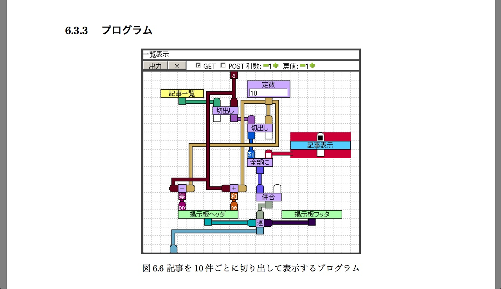
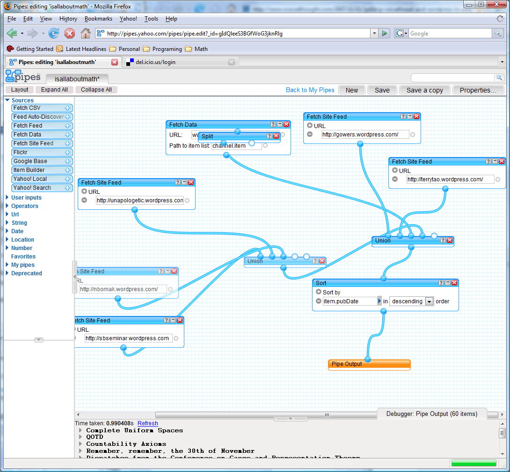

背景
Webアプリケーションの実装とAjax
Webアプリケーションを制作する際、どのようなコンテンツを生成・提供するかを決めるサーバーサイド処理、ユーザーの挙動に対応して、コンテンツを操作したり、サーバーに新たなリクエストを送ったりするクライアントサイド処理の2種類のプログラムが考えられる。
このうちクライアントサイドでは、Ajaxという仕組みが使われることが、近年普通になってきている。Ajaxとは、Asynchronous JavaScript + XMLの略。Javascriptを通して、Webページ全体をを再読み込みすることなく、必要なデータだけをサーバーにリクエストすることができる。この特徴により、Ajaxを活用したWebアプリケーションでは、新しい情報を出す際にページの遷移がなくなり、ユーザーが読み込みを待つ時間が減り、サーバーにかかる負荷も押さえられる。
同期処理と非同期処理
Ajaxのもうひとつの特徴は、非同期処理という点だ。Javascriptを含む多くのプログラミング言語において、通常の進み方は同期処理と呼ばれ、ひとつの処理が終了するのを待って、次の処理に進む、という形をとっている。すなわち、プログラムのソースコードを上から下へ辿っていけば、実際に行われる処理を辿ることができる。
ところが、この途中にに非同期処理が入っていた場合、非同期処理の終了は待たれず、次の処理に進んでしまう。すなわち、この処理は元のプログラムとは別の流れで、並列に実行される。また、元のプログラムとは別に、この非同期処理が終わったあとに実行する処理を、「コールバック関数」として登録しておくことも多い。
Ajaxは、この非同期処理の形で、サーバーにリクエストを送り、取得したデータをコールバック関数を使って返す。これにより、例えばサイズの大きなファイルを、大量に読み込んだ場合でも、元のプログラムはとにかく先へ進み、読み込みが終わったものから順次画面上に表示する、ということもできる。
なおAjaxの他にも、画面上のボタンが押された時の処理、一定時間が経過してから実行する処理、なども非同期処理と呼ぶことができるだろう。
HTML5の普及による影響
現在のWebアプリケーション開発において、この非同期処理が担っている役割は大きい。HTML5の普及により、Webアプリケーションがよりリッチなインタフェースを持つようになったことが、その理由だ。これにより、スマートフォンへのマルチタッチや、本体を振るなど多種多様なイベントに対する振る舞いを取り扱う必要が出てきた。
研究の目的
問題提起
こうした流れの一方で、非同期処理は開発者にとっては分かりづらい部分も増やしている。例えば、関数がソースコード上で書かれている順番と、実行される順番が大きく異なる場合もある。かならず立て続けに実行される処理でも、ソースコード上では一続きに書くことができない、ということが起きる。
ソースコードの理解しづらさは、プログラムのメンテナンス性、また共同で開発をする場合の共有のしやすさ等の観点から、開発における障害となる。しかしながら、この読みづらいコードを取り扱わなければならないという問題に対して、いまのところ抜本的な解決策はない。
本研究では、こうしたWebインタフェースの非同期プログラミングにおける、メンテナンス性・共有性を改善する開発環境を提案する。
解決方法
本研究では、この問題を解決するためのヴィジュアルプログラミング環境を作成する。実行の位置が動的に変化する非同期処理を、上から下へと進むことしかできない、テキストのプログラミングで分かりやすく表現することには、限界があるからだ。
非同期処理がいくつもある形の処理は、いつどの処理が終わるのを待っているか、待ち状態の遷移の形で表現できると考えられるため、state chartを取り入れた表現方法を用いる。
先行研究との比較
async.js, deffered.js
ライブラリのレベルで、非同期処理をシンプルに書こうとする試みも、もちろんある。Javascriptのライブラリ「async.js」と「deffered.js」は、その中でも比較的よく知られているものだ。
async.series([
function(callback){
// do some stuff ...
callback(null, 'one');
},
function(callback){
// do some more stuff ...
callback(null, 'two');
},
],
// optional callback
function(err, results){
// results is now equal to ['one', 'two']
});ただし、いずれのライブラリも目的は、連続した非同期処理を、同期処理のように連続した形で書くことだ。すなわち、一続きになっている非同期処理を見やすい形で記述することは可能だが、コードのさまざまな場所で非同期処理が発生している場合の分かりづらさは、解決できない。
Webアプリケーション構築のためのビジュアルプログラミング言語
Webアプリケーションをビジュアルプログラミングで構築する試みは、以前にもあった。
ビジュアルプログラミング言語「ゆば」は、Webサービスを構築する際のハードルを下げるために開発され、データベースと連携した本格的なアプリケーションを、ビジュアル言語のみで記述できた。
また、既にサービスとして運用されているものとしては「Yahoo! Pipes」がある。こちらは、サーバーサイドでのデータ整形に特化したプログラミング環境で、複数のAPIから情報を組み合わせて、新たなデータを生成することができる。
いずれの言語も、それぞれ異なった目的を持っている。本研究のように非同期処理をシンプルにするという目的、またWebインタフェースに特化したビジュアルプログラミング言語は未だないと言える。
実装
システム仕様
本研究では、Javascriptをベースにしたビジュアルプログラミング環境(以下、本システム)を実装した。本システムの開発は、Javascript(Node.jsによるサーバーサイド実装も含む)で行った。

state chartの実装について
本システムの骨子には、JavascriptによるStateMachine実装がある。
基本的な使い方
いくつかの状態を作り、それぞれ「この状况(condition)が起きたら、この状態に移動する」という形で、Webの挙動を記述できます。
また、それぞれの状况(condition)や状態遷移時に実行するアクションは、Javascriptで直接編集・追加ができます。(今回は実験のため、この機能は利用できません)
- (1) Webの画面を開いてから、どんな時、ユーザーのどんな動作を待っているのか、それぞれの場合で何が起きるのか、一覧することができる。
- (2) 一覧することにより、バグや処理の抜け落ちを防ぐことができる。
- (3) フローチャートにも近いスタイルで、プログラムそのものを記述できる。そのため、どのような動作をするプログラムなのか、他の人にも伝えやすくなる。
- (4) インタフェース構築を行う人と、Javascriptの機能そのものを書く人を分けることができる。
各部分の説明

save
このプログラムを保存します。
new state
状態を追加します。好きな名前を入力して、OKを押してください。
オレンジ色の四角 => 状態(state)
あるひとつの状態を表しています。色の濃いものは初期状態(initial)、Webの画面を開いた時点での状態です。
- →ドラッグ&ドロップ...画面上での位置を動かします。
- →クリック...選択。右のバーにその状態の情報が表示されます。
- →状態名の左の●をクリック...そのまま、別の状態の●をクリックすると、そこまで矢印をひきます。(=状態遷移する条件を追加)
すぐに右のバーからconditionを指定しましょう。
矢印 => 状態遷移(transition)
ある状態からある状態へ、どんな場合に移動するかを指定しています。
- →クリック...選択。右のバーにその状態の情報が表示されます。
考察
目的の再確認
本研究の目的は、Webインタフェースの非同期プログラミングにおける、メンテナンス性・共有性を改善する、ツールを提案することである。この章では、今回開発したヴィジュアルプログラミング環境「sugoroku」が、プログラムのメンテナンス性・共有性を向上させることができるかどうかを評価する。
実験
まず本システムを使って、簡単なSNS風Webアプリケーションを作成した。被験者には、このアプリケーションを、いくつかの設問に応じて変更する、という作業を行ってもらった。
またこれとは別に、アンケートで以下の項目について回答してもらった。
- プログラミングの経験
- Javascriptプログラミングの経験
- sugorokuの操作は分かりやすかったか(5段階)
結論
本システムを用いることで、Webアプリケーションの非同期処理を、分かりやすく表現・記述することができる。
参考文献
- Ajax: A New Approach to Web Applications - Adaptive Path
- HARP: Ajaxの非同期通信を利用したWebチラシの自動更新およびポータルシステムの構築
- caolan/async · GitHub
- JSDeferred - Asynchronous library in JavaScript. Standalone and Compact
- 企業を熱くする最新テクノロジ Ajax 非同期通信でネット負荷を軽減 ブラウザ操作向上で業務効率改善
- 三浦琢磨「ウェブサイト構築を目的とした データフロー型ビジュアルプログラミング言語 『ゆば』の開発」、『2007年度早稲田大学修士論文集』、2008
- 小澤正樹「GUIの絵コンテ式ビジュアルプログラミング」、『情報処理学会研究報告. ソフトウェア工学研究会報告 94(18)』、17-24、1994-03-01
- G. COSTAGLIOLA, A. DELUCIA, S. OREFICEz AND G. POLESE「A Classification Framework to Support the Design of Visual Languages」, Journal of Visual Languages and Computing, 13, 2002, p.573-600
付録
- 本システムソースコード
- http://github.com/fnobi/sugoroku
- 本システムデモページ
- http://sugoroku.fnobi.com